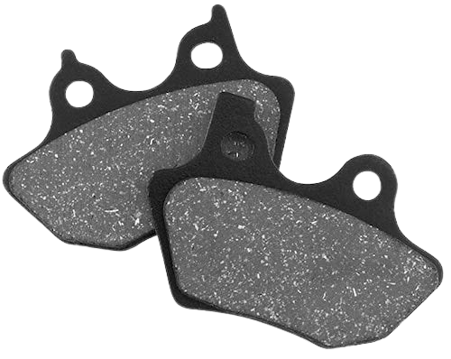
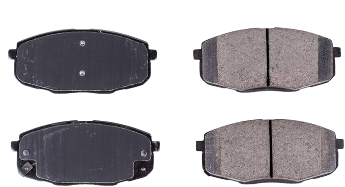

Brake pads are a crucial component of any vehicle's braking system, responsible for providing the friction needed to slow down or stop the vehicle safely. In this comprehensive guide, we'll delve into everything you need to know about brake pads, from their types and materials to maintenance tips and signs of wear.
Gaining more knowledge of the brakes, we'll be considering the types of brake pads we have.
1. Organic Brake Pads: Made from a blend of materials like rubber, glass, and resin, organic brake pads are affordable and offer smooth, quiet braking performance. However, they tend to wear out faster and may produce more dust. 
2. Semi-Metallic Brake Pads: Constructed with a mix of metals like copper, iron, and steel,
semi-metallic brake pads provide excellent stopping power and durability. They're ideal for
high-performance vehicles but may produce more noise and rotor wear.

3. Ceramic Brake Pads: Composed of ceramic fibers, bonding agents, and filler materials, ceramic brake pads offer superior braking performance, reduced dust, and longer lifespan compared to organic and semi-metallic pads. They're a popular choice for daily driving and luxury vehicles. 
Brake pads are also liable to wear and tear. A few signs that your brakepads is wearing:
1. Squealing or Grinding Noise: Indicates that the brake pads have worn down to the point of needing replacement.
2. Vibration or Pulsation: May signal warped brake rotors due to excessive heat buildup from worn brake pads.
3. Reduced Stopping Power: Longer stopping distances or a spongy brake pedal may indicate worn brake pads or other brake system issues.
It is important to consider factors like driving habits, vehicle type, and budget when selecting brake pads. Consult your vehicle's manual or a trusted mechanic for recommendations on the best type of brake pads for your specific needs. Most importantly, proper maintenance of the brakes is key. Here are a few considerations we can look at.
1. Regular Inspections: Check your brake pads for wear and tear every 12,000 to 15,000 miles or as recommended by your vehicle manufacturer.
2. Brake Pad Replacement: Replace brake pads when they reach the minimum thickness specified by the manufacturer or if you notice signs of uneven wear, squealing noises, or decreased braking performance.
3. Brake System Flush: Periodically flush and replace brake fluid to maintain optimal brake performance and prevent corrosion and contamination.
Understanding brake pads is essential for ensuring your vehicle's safety and performance on the road. By choosing the right type of brake pads, performing regular maintenance, and being aware of signs of wear, you can prolong the lifespan of your braking system and drive with confidence.